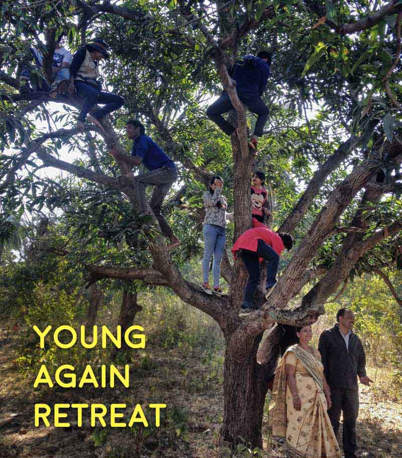

Young Again Retreat

Humans have entered into accelerated aging – specs at 10, hypothyroidism at 20, grey-hair at 30, diabetes at 35 and heart-attack and cancer at 40 are no more exceptions. This retreat is aimed at understanding the effect of autophagy and self-repair on aging.
For people of age 18-40
Click here to Register
Objectives:
- To slowdown or reverse the overall aging process as reflected by biological or body age.
- Prevent or reverse age related disorders including hypothyroidism, diabetes, hypertension etc
- Achieve right body weight and tone
The retreat has two modes –
ACHIEVE – 24 Feb to 10 Mar 2017
This two week retreat will include both tutorials and practicing the process. We’ll work towards achieving strong change in health parameters.
UNDERSTAND - 17-19 Feb and 24-26 Feb 2017
To those of you can spare only short period of time, join the 3 day retreat. This will include tutorials and trial of the process.
Facilitators:
Dr Vipin Gupta: Former drug discovery scientist Dr Gupta has served as resource to many organizations around the world including the Royal Swedish Academy of Sciences. He has reversed his own biological age by 9 years and has helped scores come out of diabetes, hypothyroidism and hypertension. More about his disease reversal program could be found at www.DiabetesTrust.in His approach is closely aligned to the autophagy research of Prof Yoshinori Ohsumi (2016 Nobel in Medicine/ Physiology). Neelima, Ramawtar and Madhur facilitate putting his ideas into action.
Process Components:
HEALTH:
This retreat revolves around fine-tuning body’s self-repair function, key elements being detoxification and receptor activation through resource-positive workouts, micro-biome restoration, and carbon-foot-print reduction. The programme will not involve any yoga, meditation or medication and shall remain limited to the lifestyle interventions only.
SPIRIT:
Sustainable living, co-working, forest walks, stargazing, healthy cuisine, creativity exercises, farming, bird-watching, storytelling, music, dance, community living, mural painting, mud sculpting, writing.
PERSONAL:
The retreat period will also be a space for self-reflection, personal projects and hobbies.
Logistics:
Click here to Register
Please register soon, the batch size is only 12 people for each retreat.
Where: Sehatvan, Amoni, Bhopal. Click for Directions
FEES:
ACHIEVE Mode – INR 6000
UNDERSTAND Mode - INR 2000
(includes facilitation, health check-ups, food and stay)
For more questions and registrations,
please call Madhur at 8602525887 or email at sehatvan@gmail.com